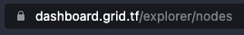
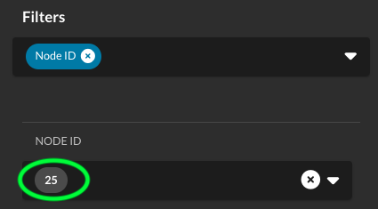

6. Boot the 3Node
Table of Contents
- Introduction
- 1. Booting the 3Node with the Zero-OS bootstrap image
- 2. Check the 3Node Status on the TF Explorer
- 3. Receive the Farming Rewards
- Advanced Booting Option - Network Booting (PXE)
Introduction
In this section of the ThreeFold Farmers book, we explain how to boot the 3Node.
1. Booting the 3Node with the Zero-OS bootstrap image
To boot Zero-OS, insert your Zero-OS Bootstrap Image, power on your computer and choose the right booting sequence and parameters (BIOS or UEFI) in your BIOS/UEFI settings. Then, restart the 3Node. Zero-OS should boot automatically.
Note that you need an ethernet cable connected to your router or switcher. You cannot farm on the ThreeFold Grid with Wifi.
The first time you boot a 3Node, it will be written: “This node is not registered (farmer ***: NameOfFarm). This is normal. The Grid will create a node ID and you will be able to see it on screen. This can take a couple of minutes.
If time passes (an hour and more) and the node does not get registered, in many cases, wiping the disks all over again and trying another reboot usually resolves this issue.
Once you have your node ID, you can also go on the ThreeFold Explorer to see your 3Node and verify that your 3Node is online.
2. Check the 3Node Status on the TF Explorer
In your browser, go on the 3Nodes Explorer section of the ThreeFold Dashboard on Main Net.

Make sure to select the filter "Node ID".

In "NODE ID", write your node ID. We use the node ID 25 as an example.

If you node is online, you should see "up" written under the column "Status".

To see offline nodes, unselect the option "Online (Only").
This example is done with the ThreeFold Dashboard on Main Net. To access the ThreeFold Dashboard on different networks, select those links:
3. Receive the Farming Rewards
The farming reward will be sent once per month at the address you gave when you set up your farm. You can review this process in the section Creating the Farm on ThreeFold Grid. If you created a TF farm with the TF Connect App, the address will be your TF Connect Wallet address.
For the TF V3, rewards are locked for a 24 months period of after 30% of farm utilization. As of now, this is not implemented. This means that you can withdraw your farming rewards anytime you want. For more details on this, please refer to the section ThreeFold Token (TFT). Details of this locking system implementation will most likely be discussed by the upcoming DAO. Stay tuned.
That's it. You've now completed the necessary steps to build a DIY 3Node and to connect it to the Grid. In the next section, we will give you more details on Farming Optimization and Planification. This will maximize your farming efficiency as well as help you plan the economics of farming.
Advanced Booting Option - Network Booting (PXE)
PXE Booting with OPNsense
This documentation comes from the amazing Network Booting Guide by @Fnelson on the ThreeFold Forum.
Network booting ditches your standard boot USB with a local server. This TFTP server delivers your boot files to your 3 nodes. This can be useful in bigger home farms, but is all but mandatory in a data center setup.
Network boot setup is quite easy and is centered about configuring a TFTP server. There are essentially 2 options for this, a small dedicated server such as a raspberry pi, or piggybacking on your pfsense or opnsense router. I would recommend the latter as it eliminates another piece of equipment and is probably more reliable.
Setting Up Your Router to Allow Network Booting
These steps are for OPNsense, PFsense may differ. These set are required regardless of where you have your TFTP server.
Services>DHCPv4>LAN>Network Booting
Check “Enable Network Booting”
Enter the IP address of your TFTP server under “Set next-server IP”. This may be the router’s IP or whatever device you are booting from.
Enter “pxelinux.0” under Set default bios filename.
Ignore the TFTP Server settings.
TFTP server setup on a debian machine such as Ubuntu or Raspberry Pi
apt-get update
apt-get install tftpd-hpa
cd /srv/tftp/
wget http://ftp.nl.debian.org/debian/dists/buster/main/installer-amd64/current/images/netboot/netboot.tar.gz
wget http://ftp.nl.debian.org/debian/dists/buster/main/installer-amd64/current/images/netboot/pxelinux.0
wget https://bootstrap.grid.tf/krn/prod/
--no-check-certificate mv
ipxe-prod.lkrn tar -xvzf netboot.tar.gz
rm version.info netboot.tar.gz
rm pxelinux.cfg/default
chmod 777 /srv/tftp/pxelinux.cfg (optional if next step fails)
echo 'default ipxe-prod.lkrn' >> pxelinux.cfg/default
TFTP Server on a OPNsense router
Note: When using PFsense instead of OPNsense, steps are probably similar, but the directory or other small things may differ.
The first step is to download the TFTP server plugin. Go to system>firmware>Status and check for updates, follow prompts to install. Then click the Plugins tab and search for tftp, install os-tftp. Once that is installed go to Services>TFTP (you may need to refresh page). Check the Enable box and input your router ip (normally 192.168.1.1). Click save.
Turn on ssh for your router. In OPNsense it is System>Settings>Administration. Then check the Enable, root login, and password login. Hop over to Putty and connect to your router, normally 192.168.1.1. Login as root and input your password. Hit 8 to enter the shell.
In OPNsense the tftp directory is /usr/local/tftp
cd /usr/local
mkdir tftp
cd ./tftp
fetch http://ftp.nl.debian.org/debian/dists/buster/main/installer-amd64/current/images/netboot/netboot.tar.gz
fetch http://ftp.nl.debian.org/debian/dists/buster/main/installer-amd64/current/images/netboot/pxelinux.0
fetch https://bootstrap.grid.tf/krn/prod/
mv
ipxe-prod.lkrn tar -xvzf netboot.tar.gz
rm version.info netboot.tar.gz
rm pxelinux.cfg/default
echo 'default ipxe-prod.lkrn' >> pxelinux.cfg/default
You can get out of shell by entering exit or just closing the window.
3Node Setup
Set the server to BIOS boot and put PXE or network boot as the first choice. At least on Dell machines, make sure you have the network cable in plug 1 or it won’t boot.
PXE Booting with pfSense
This documentation comes from the amazing Network Booting Guide by @TheCaptain on the ThreeFold Forum.
These are the steps required to enable PXE booting on pfSense. This guide assumes you’ll be using the router as your PXE server; pfSense allows boot file uploads directly from its web GUI.
- Log into your pfSense instance
- Go to System>Package Manager
- Search and add ‘tftpd’ package under ‘Available Packages’ tab
- Go to System>Package Manager
- Go to Services>TFTP Server
- Under ‘Settings’ tab check enable and enter the router IP in TFTP Server Bind IP field
- Switch to ‘Files’ tab under Services>TFTP Server and upload your ‘ipxe-prod.efi’ file acquired from https://v3.bootstrap.grid.tf/ (second option labeled ‘EFI Kernel’)
- Go to Services>DHCP Server
- Under ‘Other Options’ section click Display Advance next to ‘TFTP’ and enter router IP
- Click Display Advance next to ‘Network Booting’
- Check enable, enter router IP in Next Server field
- Enter ipxe-prod.efi in Default BIOS file name field
That's it! You’ll want to ensure your clients are configured with boot priority set as IPv4 in first spot. You might need to disable secure boot and enable legacy boot within BIOS.
Other farmers can any node with your farmID
It's a known issue, It's going to be resolved once the TPM effort gets finalized